Mar 10, 2026
[Updates] New Students Join the MINT Lab!
We are excited to welcome new undergraduate students (명선, 서진, 혜현: 12월 29일, 세영: 1월 19일, 정규: 2월 25일, 진수: 3월 10일) to our lab! 모두들 환영합니다. 즐거운 연구실 생활 합시다!
All lab updates, publications, group events, and announcements from MINT Lab.
재료정보이론연구실의 최신 출판, 연구, 학회 활동 등 다양한 소식을 확인하세요!
We are excited to welcome new undergraduate students (명선, 서진, 혜현: 12월 29일, 세영: 1월 19일, 정규: 2월 25일, 진수: 3월 10일) to our lab! 모두들 환영합니다. 즐거운 연구실 생활 합시다!

Kisung led and mentored students in a semiconductor training program, providing hands-on education and industry-focused lectures on semiconductor manufacturing and packaging processes.

David (University of Illinois at Urbana-Champaign) presented his new development on thermo-optic phase spectroscopy (TOPS) and its applications in materials characterization. David had a great reunion with group alumni including Kisung!

He leads the MINT Lab (Materials Informatics & Theory Laboratory, 재료정보이론연구실) in Chonnam National University (CNU, 전남대학교). His group aims to advance the understanding of material properties and their applications by studying microscopic interactions to better comprehend macroscopic phenomena.
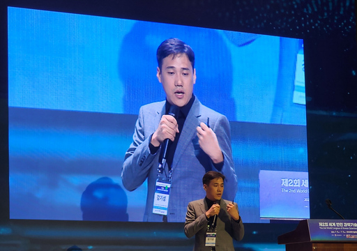
Kisung exhibited his thermoelectric materials research aims to convert wasted heat into electricity, improve energy efficiency, and contribute to building a carbon-neutral society.
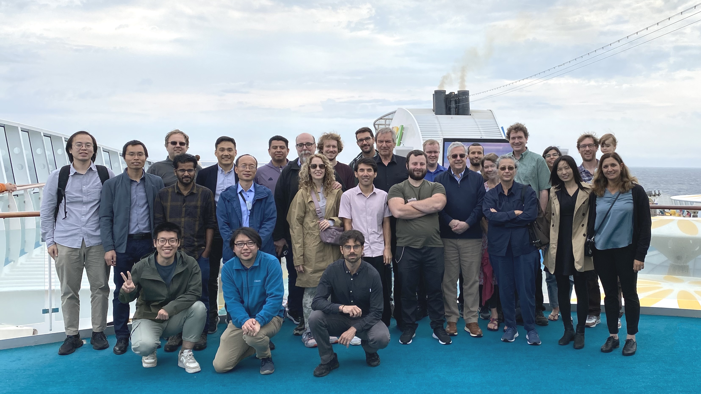
Enjoyed the Munch museum in Norway and freetown christiania in Denmark!

Andre(University of Illinois at Urbana-Champaign) presented his research on "Excited-electron mediated defect diffusion, secondary, electrons, and problems with thermalization" and had a great reunion with Kisung!
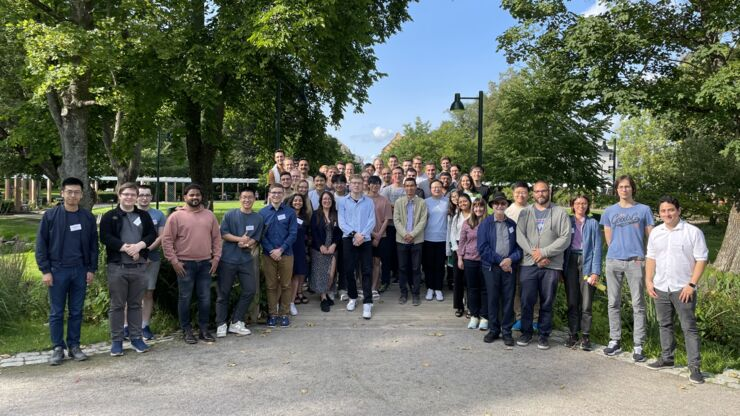
Learned about the latest developments in teperature-dependent effective potential methods for thermal properties.
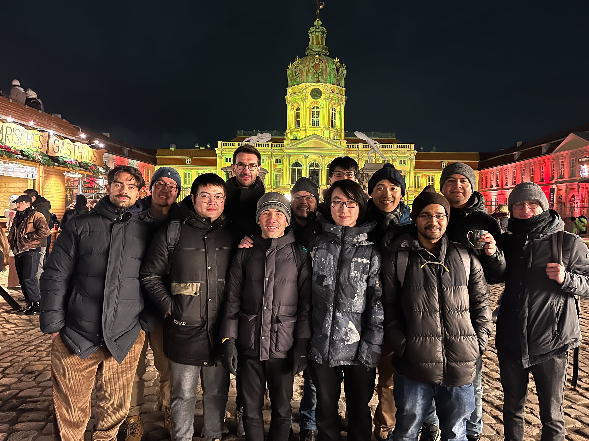
Had a great time enjoying the festive atmosphere, glühwein, and salmon sandwiches!

Enjoyed the scenic views and learned about the history of the site.
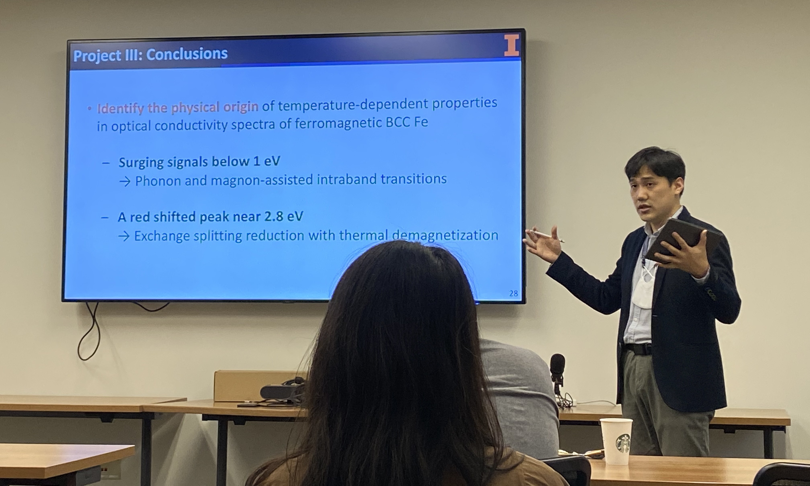
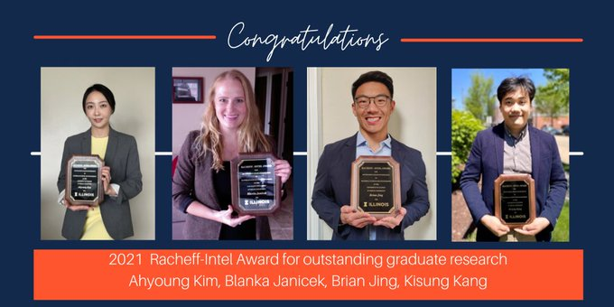
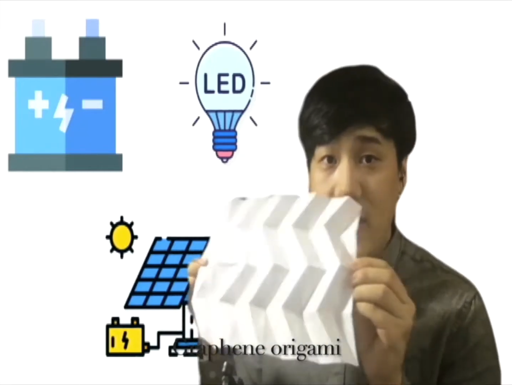
1st place in the "Together We Will" Theme award for Engineering Open House, University of Illinois
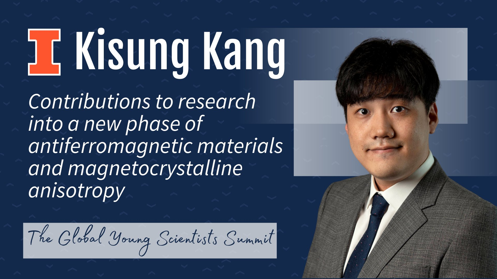
Kisung was selected in recognition of his contributions to research on a new phase of antiferromagnetic materials and magnetocrystalline anisotropy.
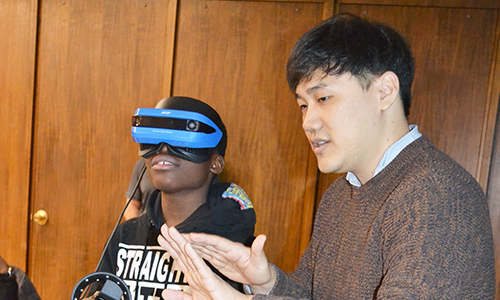
Kisung participated in the AAAS science communication workshop to improve his public engagement skills and develop clearer, more accessible ways to communicate materials simulation research to K–12 students and the public.
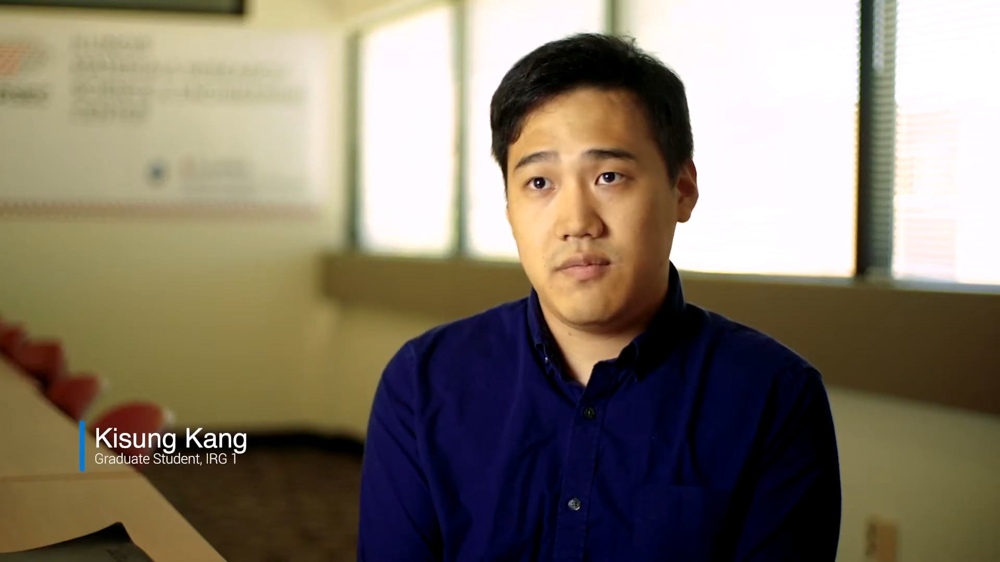
Kisung introduced his computational materials science research on antiferromagnetic materials as part of the Illinois Materials Research Science and Engineering Center IRG1 research theme video.
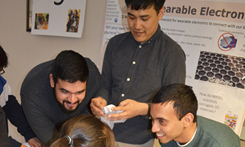
Kisung interacted with young visitors at the Cena y Ciencias by introducing graphene and flexible electronics through hands-on educational activities.
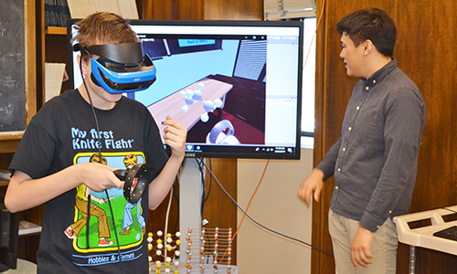
Kisung participated in the Musical Magnetism outreach program, helping middle school students learn materials science and magnetism through interactive, multidisciplinary activities combining science, music, and communication.
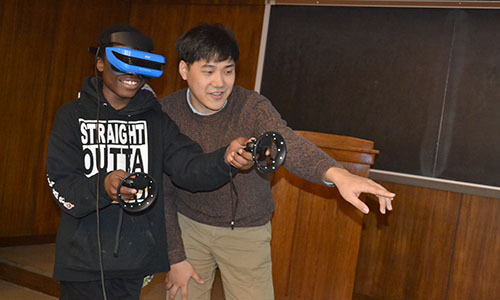
Kisung interacts with a Franklin STEAM Studio student who's experienceing Virtual Reality during one of the school's field trips to MRL.
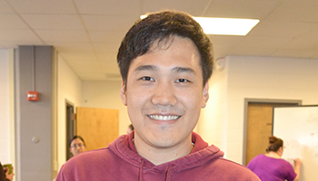
Kisung participated in an Social Media for Scientists: #Tweetyourscience workshop to explore how social media and Twitter could help him network and communicate within the scientific community in the future.
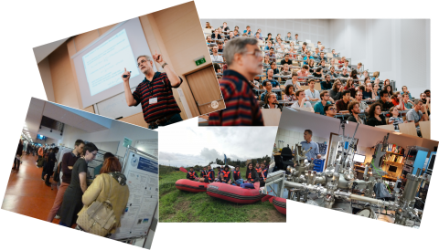
Kisung attended the European School on Magnetism 2018 in Kraków, Poland, where he studied magneto-optical effects and antiferromagnetic materials through lectures, practicals, and a poster presentation, gaining valuable experience for his future research.
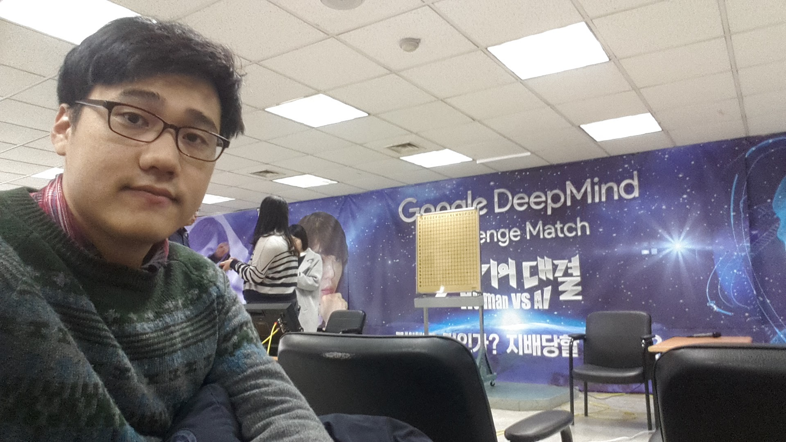
Kisung attended the public commentary event for the historic final match between Lee Sedol and Google DeepMind’s AlphaGo in Seoul, witnessing firsthand a landmark moment in artificial intelligence and human-machine competition.

Kisung participated in the KEPCO E&C Power Engineering School Camp, where he gained multidisciplinary engineering and power plant field experience, collaborated with engineering students from universities across Korea, and developed a broader perspective on convergence engineering and the social responsibility of engineers.